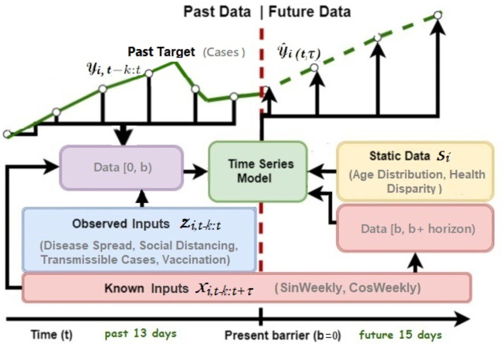

Problem Statement
Our goal was to create a deep learning model that would accurately predict daily COVID-19 cases. To achieve this, we used a multivariate, multi-horizon approach that integrates heterogeneous types of inputs for each county.
In Mathematical notation, we write our problem statement as follow:
\( \hat y_i(t, \tau) = f(\tau, y_{i, t-k:t}, \textbf{z}_{i, t-k:t}, \textbf{x}_{i, t-k:t+\tau}, \textbf{s}_i ) \)
\(\hat y_i(t, \tau)\) represents the predicted number of cases in a day at a given time \(t \in [0, T_i]\) for any county \(i\), with \(\tau\) as days into the future, and \(T_i\) as the length of the time series period.
In our study, we use the previous 13 days of data to forecast the next 15 days of data ---- this is where the multi-horizon approach comes in.

Our three types of inputs are:
1. Static Inputs : Each county i is associated with a set of static inputs \(s_i\), which do not vary over time and are specific to that county's demographics.
2. Observed or Past Inputs : Observed inputs are time-varying features known at each timestamp \(t \in [0, T_i]\) (e.g., Vacciation, Disease Spread, Social Distancing, Transmissible Cases), but their future values are unknown. We incorporate all past information within a lookback window of k (the past 13 days), using target (cases) and observed inputs upto the forecast start time *t*: \(\space y_{i,t-k:t} = {y_{i,t-k}, ..., y_{i, t} }\) and \(z_{i, t-k:t} = {z_{i,t-k}, ..., z{i, t}}\).
3. Known Future Inputs : These inputs \(x_{i, t}\) can be measured beforehand, which in our case are the sine and cosine of the day of a week at a given date, and are known at the time of prediction. We also add known future inputs across the entire range for the TFT.
DATA
We collected our dataset from multiple sources, including CDC (Centers for Disease Control and Prevention), USA Facts [15], and Unacast [16]. The collected data covers a time frame from February 29, 2020, to May 17, 2022, and includes a wide range of county-level features. However, for the vaccination feature, we used data from the CDC [17] starting from December 14, 2020, when the US initiated a nationwide COVID-19 vaccination campaign, as it was the earliest available data.
Experiments
In our Data-Split, validation set comprises the next 15 days after the training period, and the test set comprises the following 15 days after the validation set.
For Benchmarking purposes, we have fine-tuned five Deep Learning Model:
our proposed TFT model, LSTM, Bi-LSTM, NBEATS, and NHiTS, with last four being benchmarks.
All Models are optimized with Adam Optimizer and MSE Loss. We select best configurations based on validation loss.
We could see that across all measuring criterias, our TFT model has achieved the state-of-art performance.